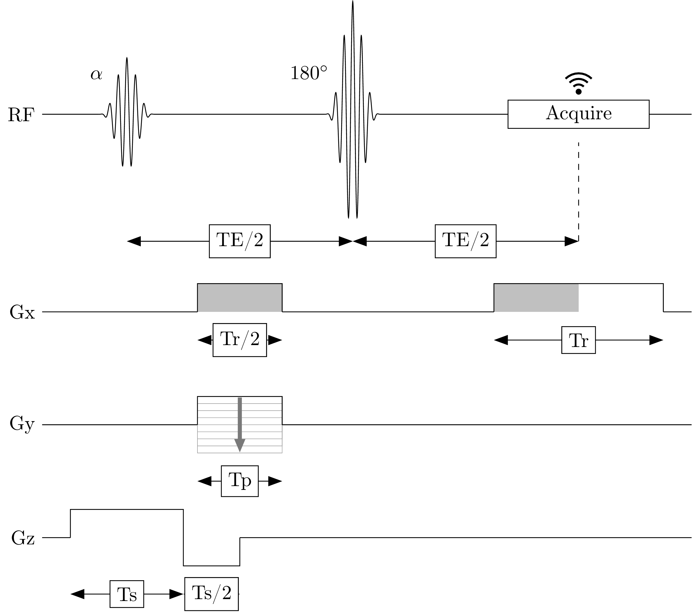

Recently, I wanted to create an MR sequence diagram and on github I came across this project: GitHub - dangom/mr-sequence-diagrams: Draw MR Sequence Diagrams for LaTeX. It is a collection of function written in metapost to produce MR sequence object lines in a turtle graphics style. As I am a tikz user, I tried to translate it from metapost to tikz to directly use it in a latex document.
Here are some examples on how to use it:
Free induction decay
Gradient echo sequence
Spin echo sequence

Continuations
There are some obvious improvements that can be made. For example I will try (if I find the time) to pass options from commands like \grad and \span to the underlying tikz code to have easy access to coloring and the like.
Acknowledgement
The mrseqdia repository is a translation of GitHub - dangom/mr-sequence-diagrams: Draw MR Sequence Diagrams for LaTeX / M… from metapost to TikZ/LaTeX. The initial metapost repository was originally created by Mark J White for his PhD Thesis. A snapshot is available in the Internet Archive here. Two of the macros — the ones for the trapez gradient wave forms — were written by T. A. Wilkinson and can be found in his blog here.